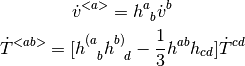
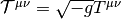
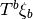
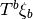

11. General Relativity¶
11.1. Description of Space-time Manifold¶
How to describe space-time manifold?
- Metric (with a set of local coordinates), connection (Christoffel symbols).
- Metric (in the form of tetrads), connection (Ricci rotation coefficients).
- 1+3 covariantly defined variables.
11.2. Description of Space-time Manifold - Coordinates¶
11.3. Description of Space-time Manifold - Tetrads¶
11.4. Description of Space-time Manifold - 1+3 Covariant Description¶
Physics in description is easier to understand.
11.4.1. Definations¶
Definations of some physical quantities and operators are listed below.
Here we have
- geometrical variables: Volume
- Kinematical variables: Velocity, Expansion rate, Shear rate
- Thermaldynanmical variables: Energy density, Momentum density, Pressure, Equation of state
11.4.1.1. Volume¶
To calculate volume, the volume element should be defined first in order to integrate. Before that, orientation on manifolds is to be figured out.
On an oriented manifold with metric, the defined volume element (a n-form) should be compatible with the orientation and also determined by the metric. [1]
Introducing those requirements, a compatible volume element is
System Message: WARNING/2 (\begin{equation} \epsilon_{a_1\cdots a_n} = \pm \sqrt{|g|} (e^1)_{a_1}\wedge \cdots \wedge (e^n)_{a_n} \end{equation} )
latex exited with error [stdout] This is pdfTeX, Version 3.1415926-2.5-1.40.14 (TeX Live 2013) restricted \write18 enabled. entering extended mode (./math.tex LaTeX2e <2011/06/27> Babel <3.9f> and hyphenation patterns for 78 languages loaded. (/usr/local/texlive/2013/texmf-dist/tex/latex/base/article.cls Document Class: article 2007/10/19 v1.4h Standard LaTeX document class (/usr/local/texlive/2013/texmf-dist/tex/latex/base/size12.clo)) (/usr/local/texlive/2013/texmf-dist/tex/latex/base/inputenc.sty (/usr/local/texlive/2013/texmf-dist/tex/latex/ucs/utf8x.def)) (/usr/local/texlive/2013/texmf-dist/tex/latex/ucs/ucs.sty (/usr/local/texlive/2013/texmf-dist/tex/latex/ucs/data/uni-global.def)) (/usr/local/texlive/2013/texmf-dist/tex/latex/amsmath/amsmath.sty For additional information on amsmath, use the `?’ option. (/usr/local/texlive/2013/texmf-dist/tex/latex/amsmath/amstext.sty (/usr/local/texlive/2013/texmf-dist/tex/latex/amsmath/amsgen.sty)) (/usr/local/texlive/2013/texmf-dist/tex/latex/amsmath/amsbsy.sty) (/usr/local/texlive/2013/texmf-dist/tex/latex/amsmath/amsopn.sty)) (/usr/local/texlive/2013/texmf-dist/tex/latex/amscls/amsthm.sty) (/usr/local/texlive/2013/texmf-dist/tex/latex/amsfonts/amssymb.sty (/usr/local/texlive/2013/texmf-dist/tex/latex/amsfonts/amsfonts.sty)) (/usr/local/texlive/2013/texmf-dist/tex/latex/tools/bm.sty) (/usr/local/texlive/2013/texmf-dist/tex/latex/preview/preview.sty) No file math.aux. (/usr/local/texlive/2013/texmf-dist/tex/latex/ucs/ucsencs.def) Preview: Fontsize 12pt (/usr/local/texlive/2013/texmf-dist/tex/latex/amsfonts/umsa.fd) (/usr/local/texlive/2013/texmf-dist/tex/latex/amsfonts/umsb.fd) ! LaTeX Error: Bad math environment delimiter. See the LaTeX manual or LaTeX Companion for explanation. Type H <return> for immediate help. ... l.18 \end{gather} ! You can’t use `\eqno’ in math mode. \endmathdisplay@a ...\df@tag \@empty \else \veqno \alt@tag \df@tag \fi \ifx ... l.18 \end{gather} ! Missing \endgroup inserted. <inserted text> \endgroup l.18 \end{gather} ! Missing } inserted. <inserted text> } l.18 \end{gather} ! LaTeX Error: \begin{split} on input line 18 ended by \end{equation}. See the LaTeX manual or LaTeX Companion for explanation. Type H <return> for immediate help. ... l.18 \end{gather} ! Missing $ inserted. <inserted text> $ l.18 \end{gather} ! Missing } inserted. <inserted text> } l.18 \end{gather} ! Missing \cr inserted. <inserted text> \cr l.18 \end{gather} ! Missing { inserted. <inserted text> { l.18 \end{gather} ! Missing $ inserted. <inserted text> $ l.18 \end{gather} ! Missing } inserted. <inserted text> } l.18 \end{gather} ! Missing { inserted. <inserted text> { l.18 \end{gather} ! Missing } inserted. <inserted text> } l.18 \end{gather} ! LaTeX Error: \begin{gather} on input line 14 ended by \end{split}. See the LaTeX manual or LaTeX Companion for explanation. Type H <return> for immediate help. ... l.18 \end{gather} ! Misplaced alignment tab character &. \math@cr@@@ ->\ifst@rred \nonumber \fi & \relax \make@display@tag \ifst@rred ... l.18 \end{gather} ! Misplaced \cr. \math@cr@@@ ...fi \global \advance \row@ \@ne \cr l.18 \end{gather} ! Misplaced \noalign. \math@cr@@ ... \iffalse }\fi \math@cr@@@ \noalign {\vskip #1\relax } l.18 \end{gather} ! Missing $ inserted. <inserted text> $ l.18 \end{gather} ! Missing } inserted. <inserted text> } l.18 \end{gather} ! Display math should end with $$. <to be read again> \vskip l.18 \end{gather} ! Extra }, or forgotten \endgroup. \math@cr@@ ...th@cr@@@ \noalign {\vskip #1\relax } l.18 \end{gather} ! Package amsmath Error: \begin{split} won’t work here. See the amsmath package documentation for explanation. Type H <return> for immediate help. ... l.18 \end{gather} ! Misplaced \cr. \math@cr@@@ ->\cr l.18 \end{gather} ! Extra }, or forgotten \endgroup. \gmeasure@ ...savetaglength@ \crcr #1\math@cr@@@ } }\restorecounters@ \if@fle... l.18 \end{gather} ! Extra }, or forgotten \endgroup. \gmeasure@ ...avetaglength@ \crcr #1\math@cr@@@ }} \restorecounters@ \if@fleq... l.18 \end{gather} ! Package amsmath Error: \begin{split} won’t work here. See the amsmath package documentation for explanation. Type H <return> for immediate help. ... l.18 \end{gather} ! Package amsmath Error: \begin{split} won’t work here. See the amsmath package documentation for explanation. Type H <return> for immediate help. ... l.18 \end{gather} ! Missing number, treated as zero. <to be read again> \relax l.18 \end{gather} ! Illegal unit of measure (pt inserted). <to be read again> \relax l.18 \end{gather} ! LaTeX Error: \begin{preview} on input line 13 ended by \end{gather}. See the LaTeX manual or LaTeX Companion for explanation. Type H <return> for immediate help. ... l.18 \end{gather} ! Missing $ inserted. <inserted text> $ l.18 \end{gather} ! Display math should end with $$. <to be read again> \endgroup l.18 \end{gather} [1] ! LaTeX Error: \begin{document} ended by \end{preview}. See the LaTeX manual or LaTeX Companion for explanation. Type H <return> for immediate help. ... l.19 \end{preview} ! Extra \endgroup. <recently read> \endgroup l.19 \end{preview} (./math.aux) ) (see the transcript file for additional information) Output written on math.dvi (1 page, 756 bytes). Transcript written on math.log.Alternatively, this can be expressed in the way Ellis used in arXiv:gr-qc/9812046v5.
System Message: WARNING/2 (\begin{equation} \eta_{abcd} = \eta_{[abcd]}, \quad \mathrm{with} \eta_{0123} = \sqrt{|\mathrm {det} g_{ab}|} \end{equation} )
latex exited with error [stdout] This is pdfTeX, Version 3.1415926-2.5-1.40.14 (TeX Live 2013) restricted \write18 enabled. entering extended mode (./math.tex LaTeX2e <2011/06/27> Babel <3.9f> and hyphenation patterns for 78 languages loaded. (/usr/local/texlive/2013/texmf-dist/tex/latex/base/article.cls Document Class: article 2007/10/19 v1.4h Standard LaTeX document class (/usr/local/texlive/2013/texmf-dist/tex/latex/base/size12.clo)) (/usr/local/texlive/2013/texmf-dist/tex/latex/base/inputenc.sty (/usr/local/texlive/2013/texmf-dist/tex/latex/ucs/utf8x.def)) (/usr/local/texlive/2013/texmf-dist/tex/latex/ucs/ucs.sty (/usr/local/texlive/2013/texmf-dist/tex/latex/ucs/data/uni-global.def)) (/usr/local/texlive/2013/texmf-dist/tex/latex/amsmath/amsmath.sty For additional information on amsmath, use the `?’ option. (/usr/local/texlive/2013/texmf-dist/tex/latex/amsmath/amstext.sty (/usr/local/texlive/2013/texmf-dist/tex/latex/amsmath/amsgen.sty)) (/usr/local/texlive/2013/texmf-dist/tex/latex/amsmath/amsbsy.sty) (/usr/local/texlive/2013/texmf-dist/tex/latex/amsmath/amsopn.sty)) (/usr/local/texlive/2013/texmf-dist/tex/latex/amscls/amsthm.sty) (/usr/local/texlive/2013/texmf-dist/tex/latex/amsfonts/amssymb.sty (/usr/local/texlive/2013/texmf-dist/tex/latex/amsfonts/amsfonts.sty)) (/usr/local/texlive/2013/texmf-dist/tex/latex/tools/bm.sty) (/usr/local/texlive/2013/texmf-dist/tex/latex/preview/preview.sty) (./math.aux) (/usr/local/texlive/2013/texmf-dist/tex/latex/ucs/ucsencs.def) Preview: Fontsize 12pt (/usr/local/texlive/2013/texmf-dist/tex/latex/amsfonts/umsa.fd) (/usr/local/texlive/2013/texmf-dist/tex/latex/amsfonts/umsb.fd) ! LaTeX Error: Bad math environment delimiter. See the LaTeX manual or LaTeX Companion for explanation. Type H <return> for immediate help. ... l.18 \end{gather} ! You can’t use `\eqno’ in math mode. \endmathdisplay@a ...\df@tag \@empty \else \veqno \alt@tag \df@tag \fi \ifx ... l.18 \end{gather} ! Missing \endgroup inserted. <inserted text> \endgroup l.18 \end{gather} ! Missing } inserted. <inserted text> } l.18 \end{gather} ! LaTeX Error: \begin{split} on input line 18 ended by \end{equation}. See the LaTeX manual or LaTeX Companion for explanation. Type H <return> for immediate help. ... l.18 \end{gather} ! Missing $ inserted. <inserted text> $ l.18 \end{gather} ! Missing } inserted. <inserted text> } l.18 \end{gather} ! Missing \cr inserted. <inserted text> \cr l.18 \end{gather} ! Missing { inserted. <inserted text> { l.18 \end{gather} ! Missing $ inserted. <inserted text> $ l.18 \end{gather} ! Missing } inserted. <inserted text> } l.18 \end{gather} ! Missing { inserted. <inserted text> { l.18 \end{gather} ! Missing } inserted. <inserted text> } l.18 \end{gather} ! LaTeX Error: \begin{gather} on input line 14 ended by \end{split}. See the LaTeX manual or LaTeX Companion for explanation. Type H <return> for immediate help. ... l.18 \end{gather} ! Misplaced alignment tab character &. \math@cr@@@ ->\ifst@rred \nonumber \fi & \relax \make@display@tag \ifst@rred ... l.18 \end{gather} ! Misplaced \cr. \math@cr@@@ ...fi \global \advance \row@ \@ne \cr l.18 \end{gather} ! Misplaced \noalign. \math@cr@@ ... \iffalse }\fi \math@cr@@@ \noalign {\vskip #1\relax } l.18 \end{gather} ! Missing $ inserted. <inserted text> $ l.18 \end{gather} ! Missing } inserted. <inserted text> } l.18 \end{gather} ! Display math should end with $$. <to be read again> \vskip l.18 \end{gather} ! Extra }, or forgotten \endgroup. \math@cr@@ ...th@cr@@@ \noalign {\vskip #1\relax } l.18 \end{gather} ! Package amsmath Error: \begin{split} won’t work here. See the amsmath package documentation for explanation. Type H <return> for immediate help. ... l.18 \end{gather} ! Misplaced \cr. \math@cr@@@ ->\cr l.18 \end{gather} ! Extra }, or forgotten \endgroup. \gmeasure@ ...savetaglength@ \crcr #1\math@cr@@@ } }\restorecounters@ \if@fle... l.18 \end{gather} ! Extra }, or forgotten \endgroup. \gmeasure@ ...avetaglength@ \crcr #1\math@cr@@@ }} \restorecounters@ \if@fleq... l.18 \end{gather} ! Package amsmath Error: \begin{split} won’t work here. See the amsmath package documentation for explanation. Type H <return> for immediate help. ... l.18 \end{gather} ! Package amsmath Error: \begin{split} won’t work here. See the amsmath package documentation for explanation. Type H <return> for immediate help. ... l.18 \end{gather} ! Missing number, treated as zero. <to be read again> \relax l.18 \end{gather} ! Illegal unit of measure (pt inserted). <to be read again> \relax l.18 \end{gather} ! LaTeX Error: \begin{preview} on input line 13 ended by \end{gather}. See the LaTeX manual or LaTeX Companion for explanation. Type H <return> for immediate help. ... l.18 \end{gather} ! Missing $ inserted. <inserted text> $ l.18 \end{gather} ! Display math should end with $$. <to be read again> \endgroup l.18 \end{gather} [1] ! LaTeX Error: \begin{document} ended by \end{preview}. See the LaTeX manual or LaTeX Companion for explanation. Type H <return> for immediate help. ... l.19 \end{preview} ! Extra \endgroup. <recently read> \endgroup l.19 \end{preview} (./math.aux) ) (see the transcript file for additional information) Output written on math.dvi (1 page, 576 bytes). Transcript written on math.log.Induced volume element  is defined use the normal vector of the hypersurface,
is defined use the normal vector of the hypersurface,
System Message: WARNING/2 (\begin{equation} \hat \epsilon_{a_1\cdots a_{n-1}} = u^b \epsilon_{b a_1 \cdots a_{n-1}} \end{equation} )
latex exited with error [stdout] This is pdfTeX, Version 3.1415926-2.5-1.40.14 (TeX Live 2013) restricted \write18 enabled. entering extended mode (./math.tex LaTeX2e <2011/06/27> Babel <3.9f> and hyphenation patterns for 78 languages loaded. (/usr/local/texlive/2013/texmf-dist/tex/latex/base/article.cls Document Class: article 2007/10/19 v1.4h Standard LaTeX document class (/usr/local/texlive/2013/texmf-dist/tex/latex/base/size12.clo)) (/usr/local/texlive/2013/texmf-dist/tex/latex/base/inputenc.sty (/usr/local/texlive/2013/texmf-dist/tex/latex/ucs/utf8x.def)) (/usr/local/texlive/2013/texmf-dist/tex/latex/ucs/ucs.sty (/usr/local/texlive/2013/texmf-dist/tex/latex/ucs/data/uni-global.def)) (/usr/local/texlive/2013/texmf-dist/tex/latex/amsmath/amsmath.sty For additional information on amsmath, use the `?’ option. (/usr/local/texlive/2013/texmf-dist/tex/latex/amsmath/amstext.sty (/usr/local/texlive/2013/texmf-dist/tex/latex/amsmath/amsgen.sty)) (/usr/local/texlive/2013/texmf-dist/tex/latex/amsmath/amsbsy.sty) (/usr/local/texlive/2013/texmf-dist/tex/latex/amsmath/amsopn.sty)) (/usr/local/texlive/2013/texmf-dist/tex/latex/amscls/amsthm.sty) (/usr/local/texlive/2013/texmf-dist/tex/latex/amsfonts/amssymb.sty (/usr/local/texlive/2013/texmf-dist/tex/latex/amsfonts/amsfonts.sty)) (/usr/local/texlive/2013/texmf-dist/tex/latex/tools/bm.sty) (/usr/local/texlive/2013/texmf-dist/tex/latex/preview/preview.sty) (./math.aux) (/usr/local/texlive/2013/texmf-dist/tex/latex/ucs/ucsencs.def) Preview: Fontsize 12pt (/usr/local/texlive/2013/texmf-dist/tex/latex/amsfonts/umsa.fd) (/usr/local/texlive/2013/texmf-dist/tex/latex/amsfonts/umsb.fd) ! LaTeX Error: Bad math environment delimiter. See the LaTeX manual or LaTeX Companion for explanation. Type H <return> for immediate help. ... l.18 \end{gather} ! You can’t use `\eqno’ in math mode. \endmathdisplay@a ...\df@tag \@empty \else \veqno \alt@tag \df@tag \fi \ifx ... l.18 \end{gather} ! Missing \endgroup inserted. <inserted text> \endgroup l.18 \end{gather} ! Missing } inserted. <inserted text> } l.18 \end{gather} ! LaTeX Error: \begin{split} on input line 18 ended by \end{equation}. See the LaTeX manual or LaTeX Companion for explanation. Type H <return> for immediate help. ... l.18 \end{gather} ! Missing $ inserted. <inserted text> $ l.18 \end{gather} ! Missing } inserted. <inserted text> } l.18 \end{gather} ! Missing \cr inserted. <inserted text> \cr l.18 \end{gather} ! Missing { inserted. <inserted text> { l.18 \end{gather} ! Missing $ inserted. <inserted text> $ l.18 \end{gather} ! Missing } inserted. <inserted text> } l.18 \end{gather} ! Missing { inserted. <inserted text> { l.18 \end{gather} ! Missing } inserted. <inserted text> } l.18 \end{gather} ! LaTeX Error: \begin{gather} on input line 14 ended by \end{split}. See the LaTeX manual or LaTeX Companion for explanation. Type H <return> for immediate help. ... l.18 \end{gather} ! Misplaced alignment tab character &. \math@cr@@@ ->\ifst@rred \nonumber \fi & \relax \make@display@tag \ifst@rred ... l.18 \end{gather} ! Misplaced \cr. \math@cr@@@ ...fi \global \advance \row@ \@ne \cr l.18 \end{gather} ! Misplaced \noalign. \math@cr@@ ... \iffalse }\fi \math@cr@@@ \noalign {\vskip #1\relax } l.18 \end{gather} ! Missing $ inserted. <inserted text> $ l.18 \end{gather} ! Missing } inserted. <inserted text> } l.18 \end{gather} ! Display math should end with $$. <to be read again> \vskip l.18 \end{gather} ! Extra }, or forgotten \endgroup. \math@cr@@ ...th@cr@@@ \noalign {\vskip #1\relax } l.18 \end{gather} ! Package amsmath Error: \begin{split} won’t work here. See the amsmath package documentation for explanation. Type H <return> for immediate help. ... l.18 \end{gather} ! Misplaced \cr. \math@cr@@@ ->\cr l.18 \end{gather} ! Extra }, or forgotten \endgroup. \gmeasure@ ...savetaglength@ \crcr #1\math@cr@@@ } }\restorecounters@ \if@fle... l.18 \end{gather} ! Extra }, or forgotten \endgroup. \gmeasure@ ...avetaglength@ \crcr #1\math@cr@@@ }} \restorecounters@ \if@fleq... l.18 \end{gather} ! Package amsmath Error: \begin{split} won’t work here. See the amsmath package documentation for explanation. Type H <return> for immediate help. ... l.18 \end{gather} ! Package amsmath Error: \begin{split} won’t work here. See the amsmath package documentation for explanation. Type H <return> for immediate help. ... l.18 \end{gather} ! Missing number, treated as zero. <to be read again> \relax l.18 \end{gather} ! Illegal unit of measure (pt inserted). <to be read again> \relax l.18 \end{gather} ! LaTeX Error: \begin{preview} on input line 13 ended by \end{gather}. See the LaTeX manual or LaTeX Companion for explanation. Type H <return> for immediate help. ... l.18 \end{gather} ! Missing $ inserted. <inserted text> $ l.18 \end{gather} ! Display math should end with $$. <to be read again> \endgroup l.18 \end{gather} [1] ! LaTeX Error: \begin{document} ended by \end{preview}. See the LaTeX manual or LaTeX Companion for explanation. Type H <return> for immediate help. ... l.19 \end{preview} ! Extra \endgroup. <recently read> \endgroup l.19 \end{preview} (./math.aux) ) (see the transcript file for additional information) Output written on math.dvi (1 page, 600 bytes). Transcript written on math.log.| [1] | For more information, check out Canbin Liang’s book. Volume 1, page 115. |
11.4.1.2. 4-velocity¶
4-velocity of observed matter is

with  ,
,  is the proper time along the worldlines of investaged matter.
is the proper time along the worldlines of investaged matter.
11.4.1.3. Projection Tensors¶
We can use 4-velocity to project variables to parts that is parallel to and parts that is orthogonal to .
System Message: WARNING/2 (\begin{eqnarray} U^a_{\phantom a b} &=& -u^a u_b \\ h_{ab} &=& g_{ab} + u_a u_b, \qquad \text{induced metric from :math:`g_{ab}`} \end{eqnarray} )
latex exited with error [stdout] This is pdfTeX, Version 3.1415926-2.5-1.40.14 (TeX Live 2013) restricted \write18 enabled. entering extended mode (./math.tex LaTeX2e <2011/06/27> Babel <3.9f> and hyphenation patterns for 78 languages loaded. (/usr/local/texlive/2013/texmf-dist/tex/latex/base/article.cls Document Class: article 2007/10/19 v1.4h Standard LaTeX document class (/usr/local/texlive/2013/texmf-dist/tex/latex/base/size12.clo)) (/usr/local/texlive/2013/texmf-dist/tex/latex/base/inputenc.sty (/usr/local/texlive/2013/texmf-dist/tex/latex/ucs/utf8x.def)) (/usr/local/texlive/2013/texmf-dist/tex/latex/ucs/ucs.sty (/usr/local/texlive/2013/texmf-dist/tex/latex/ucs/data/uni-global.def)) (/usr/local/texlive/2013/texmf-dist/tex/latex/amsmath/amsmath.sty For additional information on amsmath, use the `?’ option. (/usr/local/texlive/2013/texmf-dist/tex/latex/amsmath/amstext.sty (/usr/local/texlive/2013/texmf-dist/tex/latex/amsmath/amsgen.sty)) (/usr/local/texlive/2013/texmf-dist/tex/latex/amsmath/amsbsy.sty) (/usr/local/texlive/2013/texmf-dist/tex/latex/amsmath/amsopn.sty)) (/usr/local/texlive/2013/texmf-dist/tex/latex/amscls/amsthm.sty) (/usr/local/texlive/2013/texmf-dist/tex/latex/amsfonts/amssymb.sty (/usr/local/texlive/2013/texmf-dist/tex/latex/amsfonts/amsfonts.sty)) (/usr/local/texlive/2013/texmf-dist/tex/latex/tools/bm.sty) (/usr/local/texlive/2013/texmf-dist/tex/latex/preview/preview.sty) (./math.aux) (/usr/local/texlive/2013/texmf-dist/tex/latex/ucs/ucsencs.def) Preview: Fontsize 12pt (/usr/local/texlive/2013/texmf-dist/tex/latex/amsfonts/umsa.fd) (/usr/local/texlive/2013/texmf-dist/tex/latex/amsfonts/umsb.fd) ! Missing \endgroup inserted. <inserted text> \endgroup l.19 \end{gather} ! Missing } inserted. <inserted text> } l.19 \end{gather} ! You can’t use `\halign’ in math mode. \eqnarray ... \let \\\@eqncr $$\everycr {}\halign to\displaywidth \bgroup \h... l.19 \end{gather} ! Missing number, treated as zero. <to be read again> \bgroup l.19 \end{gather} ! Illegal unit of measure (pt inserted). <to be read again> \bgroup l.19 \end{gather} ! Missing } inserted. <inserted text> } l.19 \end{gather} ! Missing $ inserted. <inserted text> $ l.19 \end{gather} ! You can’t use `macro parameter character #’ in math mode. \eqnarray ...g $\displaystyle \tabskip \z@skip {## }$\@eqnsel &\global \@eqcn... l.19 \end{gather} ! Missing { inserted. <inserted text> { l.19 \end{gather} ! Missing { inserted. <inserted text> { l.19 \end{gather} ! Missing $ inserted. <inserted text> $ l.19 \end{gather} ! Missing } inserted. <inserted text> } l.19 \end{gather} ! Missing } inserted. <inserted text> } l.19 \end{gather} ! You can’t use `macro parameter character #’ in restricted horizontal mode. \eqnarray ...e \hskip \tw@ \arraycolsep \hfil ${## }$\hfil &\global \@eqcnt \... l.19 \end{gather} ! Missing { inserted. <inserted text> { l.19 \end{gather} ! Extra alignment tab has been changed to \cr. <template> }$\hfill \endtemplate l.19 \end{gather} ! Missing } inserted. <inserted text> } l.19 \end{gather} ! Missing $ inserted. <inserted text> $ l.19 \end{gather} ! You can’t use `macro parameter character #’ in math mode. \eqnarray ... \tw@ \arraycolsep $\displaystyle {## }$\hfil \tabskip \@centeri... l.19 \end{gather} ! Missing { inserted. <inserted text> { l.19 \end{gather} ! Missing $ inserted. <inserted text> $ l.19 \end{gather} ! You can’t use `macro parameter character #’ in restricted horizontal mode. \eqnarray ...nt \thr@@ \hb@xt@ \z@ \bgroup \hss ## \egroup \tabskip \z@skip \cr l.19 \end{gather} ! Extra alignment tab has been changed to \cr. <template> }$\hfill \endtemplate l.19 \end{gather} ! Extra alignment tab has been changed to \cr. <template> }$\hfill \endtemplate l.19 \end{gather} ! Missing $ inserted. <inserted text> $ l.19 \end{gather} ! Extra }, or forgotten $. \textdef@ ...th {#1}\let \f@size #2\selectfont #3} } l.19 \end{gather} ! Extra }, or forgotten $. \textdef@ ...h {#1}\let \f@size #2\selectfont #3}} l.19 \end{gather} ! Extra }, or forgotten $. \text@ ...e {\textdef@ \displaystyle \f@size {#1}} {\textdef@ \textstyle \f@s... l.19 \end{gather} ! Missing $ inserted. <inserted text> $ l.19 \end{gather} ! Extra }, or forgotten $. \textdef@ ...th {#1}\let \f@size #2\selectfont #3} } l.19 \end{gather} ! Extra }, or forgotten $. \textdef@ ...h {#1}\let \f@size #2\selectfont #3}} l.19 \end{gather} ! Extra }, or forgotten $. \text@ ...xtstyle \f@size {\firstchoice@false #1}} {\textdef@ \textstyle \sf@... l.19 \end{gather} ! Missing $ inserted. <inserted text> $ l.19 \end{gather} ! Extra }, or forgotten $. \textdef@ ...th {#1}\let \f@size #2\selectfont #3} } l.19 \end{gather} ! Extra }, or forgotten $. \textdef@ ...h {#1}\let \f@size #2\selectfont #3}} l.19 \end{gather} ! Extra }, or forgotten $. \text@ ...tstyle \sf@size {\firstchoice@false #1}} {\textdef@ \textstyle \ssf... l.19 \end{gather} ! Missing $ inserted. <inserted text> $ l.19 \end{gather} ! Extra }, or forgotten $. \textdef@ ...th {#1}\let \f@size #2\selectfont #3} } l.19 \end{gather} ! Extra }, or forgotten $. \textdef@ ...h {#1}\let \f@size #2\selectfont #3}} l.19 \end{gather} ! Extra }, or forgotten $. \text@ ...style \ssf@size {\firstchoice@false #1}} \check@mathfonts } l.19 \end{gather} ! Extra }, or forgotten $. \text@ ...firstchoice@false #1}}\check@mathfonts } l.19 \end{gather} ! Misplaced \cr. \@@eqncr ...l \@eqnswtrue \global \@eqcnt \z@ \cr l.19 \end{gather} ! Extra }, or forgotten $. \endeqnarray ->\@@eqncr \egroup \global \advance \c@equation \m@ne $$\@ignor... l.19 \end{gather} ! Missing $ inserted. <inserted text> $ l.19 \end{gather} ! Missing } inserted. <inserted text> } l.19 \end{gather} ! Missing } inserted. <inserted text> } l.19 \end{gather} ! Missing } inserted. <inserted text> } l.19 \end{gather} ! Missing $ inserted. <inserted text> $ l.19 \end{gather} ! Missing } inserted. <inserted text> } l.19 \end{gather} ! Missing } inserted. <inserted text> } l.19 \end{gather} ! Missing } inserted. <inserted text> } l.19 \end{gather} ! Missing $ inserted. <inserted text> $ l.19 \end{gather} ! Missing } inserted. <inserted text> } l.19 \end{gather} ! Missing } inserted. <inserted text> } l.19 \end{gather} ! Missing } inserted. <inserted text> } l.19 \end{gather} ! Missing $ inserted. <inserted text> $ l.19 \end{gather} ! Missing } inserted. <inserted text> } l.19 \end{gather} ! Missing } inserted. <inserted text> } l.19 \end{gather} ! Missing } inserted. <inserted text> } l.19 \end{gather} ! Missing { inserted. <to be read again> \endgroup l.19 \end{gather} ! Missing } inserted. <inserted text> } l.19 \end{gather} ! Missing { inserted. <to be read again> \endgroup l.19 \end{gather} ! Missing } inserted. <inserted text> } l.19 \end{gather} ! Missing { inserted. <to be read again> \endgroup l.19 \end{gather} ! Missing } inserted. <inserted text> } l.19 \end{gather} ! Missing } inserted. <inserted text> } l.19 \end{gather} ! Missing } inserted. <inserted text> } l.19 \end{gather} ! Missing $ inserted. <inserted text> $ l.19 \end{gather} ! Missing } inserted. <inserted text> } l.19 \end{gather} ! Missing \cr inserted. <inserted text> \cr l.19 \end{gather} ! Missing \cr inserted. <inserted text> \cr l.19 \end{gather} ! Misplaced \cr. <inserted text> \cr l.19 \end{gather} ! Missing \cr inserted. <inserted text> \cr l.19 \end{gather} ! Misplaced \cr. <inserted text> \cr l.19 \end{gather} ! Missing \cr inserted. <inserted text> \cr l.19 \end{gather} ! Misplaced \cr. <inserted text> \cr l.19 \end{gather} ! Missing \cr inserted. <inserted text> \cr l.19 \end{gather} ! Misplaced \cr. <inserted text> \cr l.19 \end{gather} ! Missing \cr inserted. <inserted text> \cr l.19 \end{gather} ! Misplaced \cr. <inserted text> \cr l.19 \end{gather} ! Missing \cr inserted. <inserted text> \cr l.19 \end{gather} ! Misplaced \cr. <inserted text> \cr l.19 \end{gather} ! Missing \cr inserted. <inserted text> \cr l.19 \end{gather} ! Misplaced \cr. <inserted text> \cr l.19 \end{gather} ! Missing \cr inserted. <inserted text> \cr l.19 \end{gather} ! Misplaced \cr. <inserted text> \cr l.19 \end{gather} ! Missing \cr inserted. <inserted text> \cr l.19 \end{gather} ! Misplaced \cr. <inserted text> \cr l.19 \end{gather} ! Missing \cr inserted. <inserted text> \cr l.19 \end{gather} ! Misplaced \cr. <inserted text> \cr l.19 \end{gather} ! Missing \cr inserted. <inserted text> \cr l.19 \end{gather} ! Misplaced \cr. <inserted text> \cr l.19 \end{gather} ! Missing \cr inserted. <inserted text> \cr l.19 \end{gather} ! Misplaced \cr. <inserted text> \cr l.19 \end{gather} ! Missing \cr inserted. <inserted text> \cr l.19 \end{gather} ! Misplaced \cr. <inserted text> \cr l.19 \end{gather} ! Missing \cr inserted. <inserted text> \cr l.19 \end{gather} ! Misplaced \cr. <inserted text> \cr l.19 \end{gather} ! Missing \cr inserted. <inserted text> \cr l.19 \end{gather} ! Misplaced \cr. <inserted text> \cr l.19 \end{gather} (That makes 100 errors; please try again.) No pages of output. Transcript written on math.log.Some properties of the two projections.
System Message: WARNING/2 (\begin{eqnarray} && U^a_{\phantom a b} U^b_{\phantom bc} = U^a_{\phantom a c} , U^a_{\phantom a a} = 1 , U_{ab}=g_{ac} U^c_{\phantom cb} , U_{ab} u^b = - g_{ac} u^c u_b u^b = u_a \\ && h^a_{\phantom ab} = g^{ac} h_{cb} = \delta^a_{\phantom ab} + u^a u_b = \delta^a_{\phantom ab} - U^a_{\phantom ab} \\ && h^a_{\phantom a c}h^c_{\phantom c b} = (\delta^a_{\phantom ac} - U^a_{\phantom ac})(\delta^c_{\phantom cb} - U^c_{\phantom cb}) = \delta^a_{\phantom ab} - U^a_{\phantom ab} = h^a_{\phantom ab} \\ && h^a_{\phantom aa} = 4-1 = 3 , h_{ab}u^b = 0 \end{eqnarray} )
latex exited with error [stdout] This is pdfTeX, Version 3.1415926-2.5-1.40.14 (TeX Live 2013) restricted \write18 enabled. entering extended mode (./math.tex LaTeX2e <2011/06/27> Babel <3.9f> and hyphenation patterns for 78 languages loaded. (/usr/local/texlive/2013/texmf-dist/tex/latex/base/article.cls Document Class: article 2007/10/19 v1.4h Standard LaTeX document class (/usr/local/texlive/2013/texmf-dist/tex/latex/base/size12.clo)) (/usr/local/texlive/2013/texmf-dist/tex/latex/base/inputenc.sty (/usr/local/texlive/2013/texmf-dist/tex/latex/ucs/utf8x.def)) (/usr/local/texlive/2013/texmf-dist/tex/latex/ucs/ucs.sty (/usr/local/texlive/2013/texmf-dist/tex/latex/ucs/data/uni-global.def)) (/usr/local/texlive/2013/texmf-dist/tex/latex/amsmath/amsmath.sty For additional information on amsmath, use the `?’ option. (/usr/local/texlive/2013/texmf-dist/tex/latex/amsmath/amstext.sty (/usr/local/texlive/2013/texmf-dist/tex/latex/amsmath/amsgen.sty)) (/usr/local/texlive/2013/texmf-dist/tex/latex/amsmath/amsbsy.sty) (/usr/local/texlive/2013/texmf-dist/tex/latex/amsmath/amsopn.sty)) (/usr/local/texlive/2013/texmf-dist/tex/latex/amscls/amsthm.sty) (/usr/local/texlive/2013/texmf-dist/tex/latex/amsfonts/amssymb.sty (/usr/local/texlive/2013/texmf-dist/tex/latex/amsfonts/amsfonts.sty)) (/usr/local/texlive/2013/texmf-dist/tex/latex/tools/bm.sty) (/usr/local/texlive/2013/texmf-dist/tex/latex/preview/preview.sty) (./math.aux) (/usr/local/texlive/2013/texmf-dist/tex/latex/ucs/ucsencs.def) Preview: Fontsize 12pt (/usr/local/texlive/2013/texmf-dist/tex/latex/amsfonts/umsa.fd) (/usr/local/texlive/2013/texmf-dist/tex/latex/amsfonts/umsb.fd) ! Missing \endgroup inserted. <inserted text> \endgroup l.21 \end{gather} ! Missing } inserted. <inserted text> } l.21 \end{gather} ! You can’t use `\halign’ in math mode. \eqnarray ... \let \\\@eqncr $$\everycr {}\halign to\displaywidth \bgroup \h... l.21 \end{gather} ! Missing number, treated as zero. <to be read again> \bgroup l.21 \end{gather} ! Illegal unit of measure (pt inserted). <to be read again> \bgroup l.21 \end{gather} ! Missing } inserted. <inserted text> } l.21 \end{gather} ! Missing $ inserted. <inserted text> $ l.21 \end{gather} ! You can’t use `macro parameter character #’ in math mode. \eqnarray ...g $\displaystyle \tabskip \z@skip {## }$\@eqnsel &\global \@eqcn... l.21 \end{gather} ! Missing { inserted. <inserted text> { l.21 \end{gather} ! Missing { inserted. <inserted text> { l.21 \end{gather} ! Missing $ inserted. <inserted text> $ l.21 \end{gather} ! Missing } inserted. <inserted text> } l.21 \end{gather} ! Missing } inserted. <inserted text> } l.21 \end{gather} ! You can’t use `macro parameter character #’ in restricted horizontal mode. \eqnarray ...e \hskip \tw@ \arraycolsep \hfil ${## }$\hfil &\global \@eqcnt \... l.21 \end{gather} ! Missing { inserted. <inserted text> { l.21 \end{gather} ! Extra alignment tab has been changed to \cr. <template> }$\hfill \endtemplate l.21 \end{gather} ! Missing } inserted. <inserted text> } l.21 \end{gather} ! Missing $ inserted. <inserted text> $ l.21 \end{gather} ! You can’t use `macro parameter character #’ in math mode. \eqnarray ... \tw@ \arraycolsep $\displaystyle {## }$\hfil \tabskip \@centeri... l.21 \end{gather} ! Missing { inserted. <inserted text> { l.21 \end{gather} ! Missing $ inserted. <inserted text> $ l.21 \end{gather} ! You can’t use `macro parameter character #’ in restricted horizontal mode. \eqnarray ...nt \thr@@ \hb@xt@ \z@ \bgroup \hss ## \egroup \tabskip \z@skip \cr l.21 \end{gather} ! Extra alignment tab has been changed to \cr. <template> }$\hfill \endtemplate l.21 \end{gather} ! Extra alignment tab has been changed to \cr. <template> }$\hfill \endtemplate l.21 \end{gather} ! Extra alignment tab has been changed to \cr. <template> }$\hfill \endtemplate l.21 \end{gather} ! Extra alignment tab has been changed to \cr. <template> }$\hfill \endtemplate l.21 \end{gather} ! LaTeX Error: Too many columns in eqnarray environment. See the LaTeX manual or LaTeX Companion for explanation. Type H <return> for immediate help. ... l.21 \end{gather} ! LaTeX Error: \begin{split} on input line 21 ended by \end{eqnarray}. See the LaTeX manual or LaTeX Companion for explanation. Type H <return> for immediate help. ... l.21 \end{gather} ! Missing $ inserted. <inserted text> $ l.21 \end{gather} ! Display math should end with $$. <to be read again> \endgroup l.21 \end{gather} ! Missing } inserted. <inserted text> } l.21 \end{gather} ! Missing { inserted. <inserted text> { l.21 \end{gather} ! Missing } inserted. <inserted text> } l.21 \end{gather} ! LaTeX Error: \begin{gather} on input line 14 ended by \end{split}. See the LaTeX manual or LaTeX Companion for explanation. Type H <return> for immediate help. ... l.21 \end{gather} ! Misplaced alignment tab character &. \math@cr@@@ ->\ifst@rred \nonumber \fi & \relax \make@display@tag \ifst@rred ... l.21 \end{gather} ! Misplaced \cr. \math@cr@@@ ...fi \global \advance \row@ \@ne \cr l.21 \end{gather} ! Misplaced \noalign. \math@cr@@ ... \iffalse }\fi \math@cr@@@ \noalign {\vskip #1\relax } l.21 \end{gather} ! Missing $ inserted. <inserted text> $ l.21 \end{gather} ! Missing } inserted. <inserted text> } l.21 \end{gather} ! Display math should end with $$. <to be read again> \vskip l.21 \end{gather} ! Extra }, or forgotten \endgroup. \math@cr@@ ...th@cr@@@ \noalign {\vskip #1\relax } l.21 \end{gather} ! Package amsmath Error: \begin{split} won’t work here. See the amsmath package documentation for explanation. Type H <return> for immediate help. ... l.21 \end{gather} ! Misplaced \cr. \math@cr@@@ ->\cr l.21 \end{gather} ! Extra }, or forgotten \endgroup. \gmeasure@ ...savetaglength@ \crcr #1\math@cr@@@ } }\restorecounters@ \if@fle... l.21 \end{gather} ! Extra }, or forgotten \endgroup. \gmeasure@ ...avetaglength@ \crcr #1\math@cr@@@ }} \restorecounters@ \if@fleq... l.21 \end{gather} ! Argument of \split has an extra }. <inserted text> \par l.21 \end{gather} Runaway argument? \collect@body \gather@split \begin {eqnarray} ! Paragraph ended before \split was complete. <to be read again> \par l.21 \end{gather} ! Missing $ inserted. <inserted text> $ l.21 \end{gather} ! Missing \endgroup inserted. <inserted text> \endgroup l.21 \end{gather} ! Missing \endgroup inserted. <inserted text> \endgroup l.21 \end{gather} ! Missing } inserted. <inserted text> } l.21 \end{gather} ! Extra }, or forgotten $. <recently read> } l.21 \end{gather} ! Missing number, treated as zero. <to be read again> \relax l.21 \end{gather} ! Illegal unit of measure (pt inserted). <to be read again> \relax l.21 \end{gather} ! Missing $ inserted. <inserted text> $ l.21 \end{gather} ! Extra alignment tab has been changed to \cr. <template> }}\place@tag@gather \endtemplate l.21 \end{gather} ! Missing number, treated as zero. <to be read again> \relax l.21 \end{gather} ! Illegal unit of measure (pt inserted). <to be read again> \relax l.21 \end{gather} ! Extra alignment tab has been changed to \cr. <template> }}\place@tag@gather \endtemplate l.21 \end{gather} ! Missing number, treated as zero. <to be read again> \relax l.21 \end{gather} ! Illegal unit of measure (pt inserted). <to be read again> \relax l.21 \end{gather} ! Extra alignment tab has been changed to \cr. <template> }}\place@tag@gather \endtemplate l.21 \end{gather} ! Missing number, treated as zero. <to be read again> \relax l.21 \end{gather} ! Illegal unit of measure (pt inserted). <to be read again> \relax l.21 \end{gather} ! Extra alignment tab has been changed to \cr. <template> }}\place@tag@gather \endtemplate l.21 \end{gather} ! Missing number, treated as zero. <to be read again> \relax l.21 \end{gather} ! Illegal unit of measure (pt inserted). <to be read again> \relax l.21 \end{gather} ! Extra alignment tab has been changed to \cr. <template> }}\place@tag@gather \endtemplate l.21 \end{gather} ! Missing number, treated as zero. <to be read again> \relax l.21 \end{gather} ! Illegal unit of measure (pt inserted). <to be read again> \relax l.21 \end{gather} Overfull \hbox (309.38919pt too wide) in alignment at lines 21–21 [] [] ! LaTeX Error: \begin{preview} on input line 13 ended by \end{eqnarray}. See the LaTeX manual or LaTeX Companion for explanation. Type H <return> for immediate help. ... l.21 \end{gather} ! Missing $ inserted. <inserted text> $ l.21 \end{gather} ! Display math should end with $$. <to be read again> \endgroup l.21 \end{gather} [1] ! Misplaced \crcr. \endsplit ->\crcr \egroup \egroup \iftagsleft@ \@xp \lendsplit@ \else \@xp \... l.21 \end{gather} ! Extra }, or forgotten \endgroup. \endsplit ->\crcr \egroup \egroup \iftagsleft@ \@xp \lendsplit@ \else \@xp \... l.21 \end{gather} ! Extra }, or forgotten \endgroup. \endsplit ->\crcr \egroup \egroup \iftagsleft@ \@xp \lendsplit@ \else \@xp \... l.21 \end{gather} ! LaTeX Error: \begin{preview} on input line 13 ended by \end{split}. See the LaTeX manual or LaTeX Companion for explanation. Type H <return> for immediate help. ... l.21 \end{gather} ! Missing $ inserted. <inserted text> $ l.21 \end{gather} ! Package amsmath Error: \begin{split} won’t work here. See the amsmath package documentation for explanation. Type H <return> for immediate help. ... l.21 \end{gather} ! Misplaced \cr. \math@cr@@@ ->\cr l.21 \end{gather} ! Misplaced \noalign. \math@cr@@ ... \iffalse }\fi \math@cr@@@ \noalign {\vskip #1\relax } l.21 \end{gather} ! Missing $ inserted. <inserted text> $ l.21 \end{gather} ! Missing } inserted. <inserted text> } l.21 \end{gather} ! Too many }’s. \math@cr@@ ...th@cr@@@ \noalign {\vskip #1\relax } l.21 \end{gather} ! Misplaced \noalign. \black@ #1->\noalign {\ifdim #1>\displaywidth \dimen@ \prevdepth \nointerlin... l.21 \end{gather} ! Too many }’s. \endgather ->\math@cr \black@ \totwidth@ \egroup $$\ignorespacesafterend l.21 \end{gather} ! LaTeX Error: \begin{document} ended by \end{gather}. See the LaTeX manual or LaTeX Companion for explanation. Type H <return> for immediate help. ... l.21 \end{gather} ! Missing $ inserted. <inserted text> $ l.21 \end{gather} ! Display math should end with $$. <to be read again> \endgroup l.21 \end{gather} ! Extra \endgroup. <recently read> \endgroup l.21 \end{gather} ! Extra \endgroup. \endpreview ->\ifhmode \unskip \fi \endgroup l.22 \end{preview} ! LaTeX Error: \begin{document} ended by \end{preview}. See the LaTeX manual or LaTeX Companion for explanation. Type H <return> for immediate help. ... l.22 \end{preview} ! Extra \endgroup. <recently read> \endgroup l.22 \end{preview} (./math.aux) ) (see the transcript file for additional information) Output written on math.dvi (1 page, 2200 bytes). Transcript written on math.log.11.4.1.4. Covariant time derivative ( )¶
)¶
This is the derivative along the fundamental worldlines (projection on the worldlines),
System Message: WARNING/2 (\begin{equation} \dot T^{ab}_{\phantom{ab}cd} = u^e \nabla_e T^{ab}_{\phantom{ab}cd} \end{equation} )
latex exited with error [stdout] This is pdfTeX, Version 3.1415926-2.5-1.40.14 (TeX Live 2013) restricted \write18 enabled. entering extended mode (./math.tex LaTeX2e <2011/06/27> Babel <3.9f> and hyphenation patterns for 78 languages loaded. (/usr/local/texlive/2013/texmf-dist/tex/latex/base/article.cls Document Class: article 2007/10/19 v1.4h Standard LaTeX document class (/usr/local/texlive/2013/texmf-dist/tex/latex/base/size12.clo)) (/usr/local/texlive/2013/texmf-dist/tex/latex/base/inputenc.sty (/usr/local/texlive/2013/texmf-dist/tex/latex/ucs/utf8x.def)) (/usr/local/texlive/2013/texmf-dist/tex/latex/ucs/ucs.sty (/usr/local/texlive/2013/texmf-dist/tex/latex/ucs/data/uni-global.def)) (/usr/local/texlive/2013/texmf-dist/tex/latex/amsmath/amsmath.sty For additional information on amsmath, use the `?’ option. (/usr/local/texlive/2013/texmf-dist/tex/latex/amsmath/amstext.sty (/usr/local/texlive/2013/texmf-dist/tex/latex/amsmath/amsgen.sty)) (/usr/local/texlive/2013/texmf-dist/tex/latex/amsmath/amsbsy.sty) (/usr/local/texlive/2013/texmf-dist/tex/latex/amsmath/amsopn.sty)) (/usr/local/texlive/2013/texmf-dist/tex/latex/amscls/amsthm.sty) (/usr/local/texlive/2013/texmf-dist/tex/latex/amsfonts/amssymb.sty (/usr/local/texlive/2013/texmf-dist/tex/latex/amsfonts/amsfonts.sty)) (/usr/local/texlive/2013/texmf-dist/tex/latex/tools/bm.sty) (/usr/local/texlive/2013/texmf-dist/tex/latex/preview/preview.sty) (./math.aux) (/usr/local/texlive/2013/texmf-dist/tex/latex/ucs/ucsencs.def) Preview: Fontsize 12pt (/usr/local/texlive/2013/texmf-dist/tex/latex/amsfonts/umsa.fd) (/usr/local/texlive/2013/texmf-dist/tex/latex/amsfonts/umsb.fd) ! LaTeX Error: Bad math environment delimiter. See the LaTeX manual or LaTeX Companion for explanation. Type H <return> for immediate help. ... l.18 \end{gather} ! You can’t use `\eqno’ in math mode. \endmathdisplay@a ...\df@tag \@empty \else \veqno \alt@tag \df@tag \fi \ifx ... l.18 \end{gather} ! Missing \endgroup inserted. <inserted text> \endgroup l.18 \end{gather} ! Missing } inserted. <inserted text> } l.18 \end{gather} ! LaTeX Error: \begin{split} on input line 18 ended by \end{equation}. See the LaTeX manual or LaTeX Companion for explanation. Type H <return> for immediate help. ... l.18 \end{gather} ! Missing $ inserted. <inserted text> $ l.18 \end{gather} ! Missing } inserted. <inserted text> } l.18 \end{gather} ! Missing \cr inserted. <inserted text> \cr l.18 \end{gather} ! Missing { inserted. <inserted text> { l.18 \end{gather} ! Missing $ inserted. <inserted text> $ l.18 \end{gather} ! Missing } inserted. <inserted text> } l.18 \end{gather} ! Missing { inserted. <inserted text> { l.18 \end{gather} ! Missing } inserted. <inserted text> } l.18 \end{gather} ! LaTeX Error: \begin{gather} on input line 14 ended by \end{split}. See the LaTeX manual or LaTeX Companion for explanation. Type H <return> for immediate help. ... l.18 \end{gather} ! Misplaced alignment tab character &. \math@cr@@@ ->\ifst@rred \nonumber \fi & \relax \make@display@tag \ifst@rred ... l.18 \end{gather} ! Misplaced \cr. \math@cr@@@ ...fi \global \advance \row@ \@ne \cr l.18 \end{gather} ! Misplaced \noalign. \math@cr@@ ... \iffalse }\fi \math@cr@@@ \noalign {\vskip #1\relax } l.18 \end{gather} ! Missing $ inserted. <inserted text> $ l.18 \end{gather} ! Missing } inserted. <inserted text> } l.18 \end{gather} ! Display math should end with $$. <to be read again> \vskip l.18 \end{gather} ! Extra }, or forgotten \endgroup. \math@cr@@ ...th@cr@@@ \noalign {\vskip #1\relax } l.18 \end{gather} ! Package amsmath Error: \begin{split} won’t work here. See the amsmath package documentation for explanation. Type H <return> for immediate help. ... l.18 \end{gather} ! Misplaced \cr. \math@cr@@@ ->\cr l.18 \end{gather} ! Extra }, or forgotten \endgroup. \gmeasure@ ...savetaglength@ \crcr #1\math@cr@@@ } }\restorecounters@ \if@fle... l.18 \end{gather} ! Extra }, or forgotten \endgroup. \gmeasure@ ...avetaglength@ \crcr #1\math@cr@@@ }} \restorecounters@ \if@fleq... l.18 \end{gather} ! Package amsmath Error: \begin{split} won’t work here. See the amsmath package documentation for explanation. Type H <return> for immediate help. ... l.18 \end{gather} ! Package amsmath Error: \begin{split} won’t work here. See the amsmath package documentation for explanation. Type H <return> for immediate help. ... l.18 \end{gather} ! Missing number, treated as zero. <to be read again> \relax l.18 \end{gather} ! Illegal unit of measure (pt inserted). <to be read again> \relax l.18 \end{gather} ! LaTeX Error: \begin{preview} on input line 13 ended by \end{gather}. See the LaTeX manual or LaTeX Companion for explanation. Type H <return> for immediate help. ... l.18 \end{gather} ! Missing $ inserted. <inserted text> $ l.18 \end{gather} ! Display math should end with $$. <to be read again> \endgroup l.18 \end{gather} [1] ! LaTeX Error: \begin{document} ended by \end{preview}. See the LaTeX manual or LaTeX Companion for explanation. Type H <return> for immediate help. ... l.19 \end{preview} ! Extra \endgroup. <recently read> \endgroup l.19 \end{preview} (./math.aux) ) (see the transcript file for additional information) Output written on math.dvi (1 page, 464 bytes). Transcript written on math.log.11.4.1.5. Fully orthogonally projected covariant derivative ()¶
This derivative is the project orghogonal to the normal vector of the hyperspace or orthogonal to the observer’s 4-velocity or along the tagent of the hyperspace.
System Message: WARNING/2 (\begin{equation} \tilde\nabla_e T^{ab}_{\phantom{ab}cd} = h^a_f h^b_gh^p_ch^q_dh^r_e \nabla_r T^{fg}_{\phantom{fg}pq} \end{equation} )
latex exited with error [stdout] This is pdfTeX, Version 3.1415926-2.5-1.40.14 (TeX Live 2013) restricted \write18 enabled. entering extended mode (./math.tex LaTeX2e <2011/06/27> Babel <3.9f> and hyphenation patterns for 78 languages loaded. (/usr/local/texlive/2013/texmf-dist/tex/latex/base/article.cls Document Class: article 2007/10/19 v1.4h Standard LaTeX document class (/usr/local/texlive/2013/texmf-dist/tex/latex/base/size12.clo)) (/usr/local/texlive/2013/texmf-dist/tex/latex/base/inputenc.sty (/usr/local/texlive/2013/texmf-dist/tex/latex/ucs/utf8x.def)) (/usr/local/texlive/2013/texmf-dist/tex/latex/ucs/ucs.sty (/usr/local/texlive/2013/texmf-dist/tex/latex/ucs/data/uni-global.def)) (/usr/local/texlive/2013/texmf-dist/tex/latex/amsmath/amsmath.sty For additional information on amsmath, use the `?’ option. (/usr/local/texlive/2013/texmf-dist/tex/latex/amsmath/amstext.sty (/usr/local/texlive/2013/texmf-dist/tex/latex/amsmath/amsgen.sty)) (/usr/local/texlive/2013/texmf-dist/tex/latex/amsmath/amsbsy.sty) (/usr/local/texlive/2013/texmf-dist/tex/latex/amsmath/amsopn.sty)) (/usr/local/texlive/2013/texmf-dist/tex/latex/amscls/amsthm.sty) (/usr/local/texlive/2013/texmf-dist/tex/latex/amsfonts/amssymb.sty (/usr/local/texlive/2013/texmf-dist/tex/latex/amsfonts/amsfonts.sty)) (/usr/local/texlive/2013/texmf-dist/tex/latex/tools/bm.sty) (/usr/local/texlive/2013/texmf-dist/tex/latex/preview/preview.sty) (./math.aux) (/usr/local/texlive/2013/texmf-dist/tex/latex/ucs/ucsencs.def) Preview: Fontsize 12pt (/usr/local/texlive/2013/texmf-dist/tex/latex/amsfonts/umsa.fd) (/usr/local/texlive/2013/texmf-dist/tex/latex/amsfonts/umsb.fd) ! LaTeX Error: Bad math environment delimiter. See the LaTeX manual or LaTeX Companion for explanation. Type H <return> for immediate help. ... l.18 \end{gather} ! You can’t use `\eqno’ in math mode. \endmathdisplay@a ...\df@tag \@empty \else \veqno \alt@tag \df@tag \fi \ifx ... l.18 \end{gather} ! Missing \endgroup inserted. <inserted text> \endgroup l.18 \end{gather} ! Missing } inserted. <inserted text> } l.18 \end{gather} ! LaTeX Error: \begin{split} on input line 18 ended by \end{equation}. See the LaTeX manual or LaTeX Companion for explanation. Type H <return> for immediate help. ... l.18 \end{gather} ! Missing $ inserted. <inserted text> $ l.18 \end{gather} ! Missing } inserted. <inserted text> } l.18 \end{gather} ! Missing \cr inserted. <inserted text> \cr l.18 \end{gather} ! Missing { inserted. <inserted text> { l.18 \end{gather} ! Missing $ inserted. <inserted text> $ l.18 \end{gather} ! Missing } inserted. <inserted text> } l.18 \end{gather} ! Missing { inserted. <inserted text> { l.18 \end{gather} ! Missing } inserted. <inserted text> } l.18 \end{gather} ! LaTeX Error: \begin{gather} on input line 14 ended by \end{split}. See the LaTeX manual or LaTeX Companion for explanation. Type H <return> for immediate help. ... l.18 \end{gather} ! Misplaced alignment tab character &. \math@cr@@@ ->\ifst@rred \nonumber \fi & \relax \make@display@tag \ifst@rred ... l.18 \end{gather} ! Misplaced \cr. \math@cr@@@ ...fi \global \advance \row@ \@ne \cr l.18 \end{gather} ! Misplaced \noalign. \math@cr@@ ... \iffalse }\fi \math@cr@@@ \noalign {\vskip #1\relax } l.18 \end{gather} ! Missing $ inserted. <inserted text> $ l.18 \end{gather} ! Missing } inserted. <inserted text> } l.18 \end{gather} ! Display math should end with $$. <to be read again> \vskip l.18 \end{gather} ! Extra }, or forgotten \endgroup. \math@cr@@ ...th@cr@@@ \noalign {\vskip #1\relax } l.18 \end{gather} ! Package amsmath Error: \begin{split} won’t work here. See the amsmath package documentation for explanation. Type H <return> for immediate help. ... l.18 \end{gather} ! Misplaced \cr. \math@cr@@@ ->\cr l.18 \end{gather} ! Extra }, or forgotten \endgroup. \gmeasure@ ...savetaglength@ \crcr #1\math@cr@@@ } }\restorecounters@ \if@fle... l.18 \end{gather} ! Extra }, or forgotten \endgroup. \gmeasure@ ...avetaglength@ \crcr #1\math@cr@@@ }} \restorecounters@ \if@fleq... l.18 \end{gather} ! Package amsmath Error: \begin{split} won’t work here. See the amsmath package documentation for explanation. Type H <return> for immediate help. ... l.18 \end{gather} ! Package amsmath Error: \begin{split} won’t work here. See the amsmath package documentation for explanation. Type H <return> for immediate help. ... l.18 \end{gather} ! Missing number, treated as zero. <to be read again> \relax l.18 \end{gather} ! Illegal unit of measure (pt inserted). <to be read again> \relax l.18 \end{gather} ! LaTeX Error: \begin{preview} on input line 13 ended by \end{gather}. See the LaTeX manual or LaTeX Companion for explanation. Type H <return> for immediate help. ... l.18 \end{gather} ! Missing $ inserted. <inserted text> $ l.18 \end{gather} ! Display math should end with $$. <to be read again> \endgroup l.18 \end{gather} [1] ! LaTeX Error: \begin{document} ended by \end{preview}. See the LaTeX manual or LaTeX Companion for explanation. Type H <return> for immediate help. ... l.19 \end{preview} ! Extra \endgroup. <recently read> \endgroup l.19 \end{preview} (./math.aux) ) (see the transcript file for additional information) Output written on math.dvi (1 page, 580 bytes). Transcript written on math.log.11.4.1.6. Orthogonal projections of vectors¶
Orthogonal projection of vectors
System Message: WARNING/2 (\begin{equation} v^{<a>} = h^a_{\phantom a b} v^b \end{equation} )
latex exited with error [stdout] This is pdfTeX, Version 3.1415926-2.5-1.40.14 (TeX Live 2013) restricted \write18 enabled. entering extended mode (./math.tex LaTeX2e <2011/06/27> Babel <3.9f> and hyphenation patterns for 78 languages loaded. (/usr/local/texlive/2013/texmf-dist/tex/latex/base/article.cls Document Class: article 2007/10/19 v1.4h Standard LaTeX document class (/usr/local/texlive/2013/texmf-dist/tex/latex/base/size12.clo)) (/usr/local/texlive/2013/texmf-dist/tex/latex/base/inputenc.sty (/usr/local/texlive/2013/texmf-dist/tex/latex/ucs/utf8x.def)) (/usr/local/texlive/2013/texmf-dist/tex/latex/ucs/ucs.sty (/usr/local/texlive/2013/texmf-dist/tex/latex/ucs/data/uni-global.def)) (/usr/local/texlive/2013/texmf-dist/tex/latex/amsmath/amsmath.sty For additional information on amsmath, use the `?’ option. (/usr/local/texlive/2013/texmf-dist/tex/latex/amsmath/amstext.sty (/usr/local/texlive/2013/texmf-dist/tex/latex/amsmath/amsgen.sty)) (/usr/local/texlive/2013/texmf-dist/tex/latex/amsmath/amsbsy.sty) (/usr/local/texlive/2013/texmf-dist/tex/latex/amsmath/amsopn.sty)) (/usr/local/texlive/2013/texmf-dist/tex/latex/amscls/amsthm.sty) (/usr/local/texlive/2013/texmf-dist/tex/latex/amsfonts/amssymb.sty (/usr/local/texlive/2013/texmf-dist/tex/latex/amsfonts/amsfonts.sty)) (/usr/local/texlive/2013/texmf-dist/tex/latex/tools/bm.sty) (/usr/local/texlive/2013/texmf-dist/tex/latex/preview/preview.sty) (./math.aux) (/usr/local/texlive/2013/texmf-dist/tex/latex/ucs/ucsencs.def) Preview: Fontsize 12pt (/usr/local/texlive/2013/texmf-dist/tex/latex/amsfonts/umsa.fd) (/usr/local/texlive/2013/texmf-dist/tex/latex/amsfonts/umsb.fd) ! LaTeX Error: Bad math environment delimiter. See the LaTeX manual or LaTeX Companion for explanation. Type H <return> for immediate help. ... l.18 \end{gather} ! You can’t use `\eqno’ in math mode. \endmathdisplay@a ...\df@tag \@empty \else \veqno \alt@tag \df@tag \fi \ifx ... l.18 \end{gather} ! Missing \endgroup inserted. <inserted text> \endgroup l.18 \end{gather} ! Missing } inserted. <inserted text> } l.18 \end{gather} ! LaTeX Error: \begin{split} on input line 18 ended by \end{equation}. See the LaTeX manual or LaTeX Companion for explanation. Type H <return> for immediate help. ... l.18 \end{gather} ! Missing $ inserted. <inserted text> $ l.18 \end{gather} ! Missing } inserted. <inserted text> } l.18 \end{gather} ! Missing \cr inserted. <inserted text> \cr l.18 \end{gather} ! Missing { inserted. <inserted text> { l.18 \end{gather} ! Missing $ inserted. <inserted text> $ l.18 \end{gather} ! Missing } inserted. <inserted text> } l.18 \end{gather} ! Missing { inserted. <inserted text> { l.18 \end{gather} ! Missing } inserted. <inserted text> } l.18 \end{gather} ! LaTeX Error: \begin{gather} on input line 14 ended by \end{split}. See the LaTeX manual or LaTeX Companion for explanation. Type H <return> for immediate help. ... l.18 \end{gather} ! Misplaced alignment tab character &. \math@cr@@@ ->\ifst@rred \nonumber \fi & \relax \make@display@tag \ifst@rred ... l.18 \end{gather} ! Misplaced \cr. \math@cr@@@ ...fi \global \advance \row@ \@ne \cr l.18 \end{gather} ! Misplaced \noalign. \math@cr@@ ... \iffalse }\fi \math@cr@@@ \noalign {\vskip #1\relax } l.18 \end{gather} ! Missing $ inserted. <inserted text> $ l.18 \end{gather} ! Missing } inserted. <inserted text> } l.18 \end{gather} ! Display math should end with $$. <to be read again> \vskip l.18 \end{gather} ! Extra }, or forgotten \endgroup. \math@cr@@ ...th@cr@@@ \noalign {\vskip #1\relax } l.18 \end{gather} ! Package amsmath Error: \begin{split} won’t work here. See the amsmath package documentation for explanation. Type H <return> for immediate help. ... l.18 \end{gather} ! Misplaced \cr. \math@cr@@@ ->\cr l.18 \end{gather} ! Extra }, or forgotten \endgroup. \gmeasure@ ...savetaglength@ \crcr #1\math@cr@@@ } }\restorecounters@ \if@fle... l.18 \end{gather} ! Extra }, or forgotten \endgroup. \gmeasure@ ...avetaglength@ \crcr #1\math@cr@@@ }} \restorecounters@ \if@fleq... l.18 \end{gather} ! Package amsmath Error: \begin{split} won’t work here. See the amsmath package documentation for explanation. Type H <return> for immediate help. ... l.18 \end{gather} ! Package amsmath Error: \begin{split} won’t work here. See the amsmath package documentation for explanation. Type H <return> for immediate help. ... l.18 \end{gather} ! Missing number, treated as zero. <to be read again> \relax l.18 \end{gather} ! Illegal unit of measure (pt inserted). <to be read again> \relax l.18 \end{gather} ! LaTeX Error: \begin{preview} on input line 13 ended by \end{gather}. See the LaTeX manual or LaTeX Companion for explanation. Type H <return> for immediate help. ... l.18 \end{gather} ! Missing $ inserted. <inserted text> $ l.18 \end{gather} ! Display math should end with $$. <to be read again> \endgroup l.18 \end{gather} [1] ! LaTeX Error: \begin{document} ended by \end{preview}. See the LaTeX manual or LaTeX Companion for explanation. Type H <return> for immediate help. ... l.19 \end{preview} ! Extra \endgroup. <recently read> \endgroup l.19 \end{preview} (./math.aux) ) (see the transcript file for additional information) Output written on math.dvi (1 page, 368 bytes). Transcript written on math.log.And the orthogonally projected symmetric trace-free part of tensors
System Message: WARNING/2 (\begin{equation} T^{<ab>} = [h^{(a}_{\phantom {(a} c} h^{b)}_{\phantom{b)}d} - \frac{1}{3} h^{ab} h_{cd} ] T^{cd} \end{equation} )
latex exited with error [stdout] This is pdfTeX, Version 3.1415926-2.5-1.40.14 (TeX Live 2013) restricted \write18 enabled. entering extended mode (./math.tex LaTeX2e <2011/06/27> Babel <3.9f> and hyphenation patterns for 78 languages loaded. (/usr/local/texlive/2013/texmf-dist/tex/latex/base/article.cls Document Class: article 2007/10/19 v1.4h Standard LaTeX document class (/usr/local/texlive/2013/texmf-dist/tex/latex/base/size12.clo)) (/usr/local/texlive/2013/texmf-dist/tex/latex/base/inputenc.sty (/usr/local/texlive/2013/texmf-dist/tex/latex/ucs/utf8x.def)) (/usr/local/texlive/2013/texmf-dist/tex/latex/ucs/ucs.sty (/usr/local/texlive/2013/texmf-dist/tex/latex/ucs/data/uni-global.def)) (/usr/local/texlive/2013/texmf-dist/tex/latex/amsmath/amsmath.sty For additional information on amsmath, use the `?’ option. (/usr/local/texlive/2013/texmf-dist/tex/latex/amsmath/amstext.sty (/usr/local/texlive/2013/texmf-dist/tex/latex/amsmath/amsgen.sty)) (/usr/local/texlive/2013/texmf-dist/tex/latex/amsmath/amsbsy.sty) (/usr/local/texlive/2013/texmf-dist/tex/latex/amsmath/amsopn.sty)) (/usr/local/texlive/2013/texmf-dist/tex/latex/amscls/amsthm.sty) (/usr/local/texlive/2013/texmf-dist/tex/latex/amsfonts/amssymb.sty (/usr/local/texlive/2013/texmf-dist/tex/latex/amsfonts/amsfonts.sty)) (/usr/local/texlive/2013/texmf-dist/tex/latex/tools/bm.sty) (/usr/local/texlive/2013/texmf-dist/tex/latex/preview/preview.sty) (./math.aux) (/usr/local/texlive/2013/texmf-dist/tex/latex/ucs/ucsencs.def) Preview: Fontsize 12pt (/usr/local/texlive/2013/texmf-dist/tex/latex/amsfonts/umsa.fd) (/usr/local/texlive/2013/texmf-dist/tex/latex/amsfonts/umsb.fd) ! LaTeX Error: Bad math environment delimiter. See the LaTeX manual or LaTeX Companion for explanation. Type H <return> for immediate help. ... l.18 \end{gather} ! You can’t use `\eqno’ in math mode. \endmathdisplay@a ...\df@tag \@empty \else \veqno \alt@tag \df@tag \fi \ifx ... l.18 \end{gather} ! Missing \endgroup inserted. <inserted text> \endgroup l.18 \end{gather} ! Missing } inserted. <inserted text> } l.18 \end{gather} ! LaTeX Error: \begin{split} on input line 18 ended by \end{equation}. See the LaTeX manual or LaTeX Companion for explanation. Type H <return> for immediate help. ... l.18 \end{gather} ! Missing $ inserted. <inserted text> $ l.18 \end{gather} ! Missing } inserted. <inserted text> } l.18 \end{gather} ! Missing \cr inserted. <inserted text> \cr l.18 \end{gather} ! Missing { inserted. <inserted text> { l.18 \end{gather} ! Missing $ inserted. <inserted text> $ l.18 \end{gather} ! Missing } inserted. <inserted text> } l.18 \end{gather} ! Missing { inserted. <inserted text> { l.18 \end{gather} ! Missing } inserted. <inserted text> } l.18 \end{gather} ! LaTeX Error: \begin{gather} on input line 14 ended by \end{split}. See the LaTeX manual or LaTeX Companion for explanation. Type H <return> for immediate help. ... l.18 \end{gather} ! Misplaced alignment tab character &. \math@cr@@@ ->\ifst@rred \nonumber \fi & \relax \make@display@tag \ifst@rred ... l.18 \end{gather} ! Misplaced \cr. \math@cr@@@ ...fi \global \advance \row@ \@ne \cr l.18 \end{gather} ! Misplaced \noalign. \math@cr@@ ... \iffalse }\fi \math@cr@@@ \noalign {\vskip #1\relax } l.18 \end{gather} ! Missing $ inserted. <inserted text> $ l.18 \end{gather} ! Missing } inserted. <inserted text> } l.18 \end{gather} ! Display math should end with $$. <to be read again> \vskip l.18 \end{gather} ! Extra }, or forgotten \endgroup. \math@cr@@ ...th@cr@@@ \noalign {\vskip #1\relax } l.18 \end{gather} ! Package amsmath Error: \begin{split} won’t work here. See the amsmath package documentation for explanation. Type H <return> for immediate help. ... l.18 \end{gather} ! Misplaced \cr. \math@cr@@@ ->\cr l.18 \end{gather} ! Extra }, or forgotten \endgroup. \gmeasure@ ...savetaglength@ \crcr #1\math@cr@@@ } }\restorecounters@ \if@fle... l.18 \end{gather} ! Extra }, or forgotten \endgroup. \gmeasure@ ...avetaglength@ \crcr #1\math@cr@@@ }} \restorecounters@ \if@fleq... l.18 \end{gather} ! Package amsmath Error: \begin{split} won’t work here. See the amsmath package documentation for explanation. Type H <return> for immediate help. ... l.18 \end{gather} ! Package amsmath Error: \begin{split} won’t work here. See the amsmath package documentation for explanation. Type H <return> for immediate help. ... l.18 \end{gather} ! Missing number, treated as zero. <to be read again> \relax l.18 \end{gather} ! Illegal unit of measure (pt inserted). <to be read again> \relax l.18 \end{gather} ! LaTeX Error: \begin{preview} on input line 13 ended by \end{gather}. See the LaTeX manual or LaTeX Companion for explanation. Type H <return> for immediate help. ... l.18 \end{gather} ! Missing $ inserted. <inserted text> $ l.18 \end{gather} ! Display math should end with $$. <to be read again> \endgroup l.18 \end{gather} [1] ! LaTeX Error: \begin{document} ended by \end{preview}. See the LaTeX manual or LaTeX Companion for explanation. Type H <return> for immediate help. ... l.19 \end{preview} ! Extra \endgroup. <recently read> \endgroup l.19 \end{preview} (./math.aux) ) (see the transcript file for additional information) Output written on math.dvi (1 page, 572 bytes). Transcript written on math.log.11.4.1.7. Othogonal projected covariant time derivatives along ¶

11.4.2. Properties¶
- Projected time and space derivatives of
 ,
,  and
and  vanish.
vanish.
11.5. Fields and Particles¶
11.5.1. Energy-Momentum Tensor for Particles¶
System Message: WARNING/2 (\begin{equation} S_p \equiv -m c \int \int \mathrm d s\mathrm d\tau \sqrt{-\dot x ^\mu g_{\mu\nu} \dot x^\nu} \delta^4(x^\mu - x^\mu (s)) , \end{equation} )
latex exited with error [stdout] This is pdfTeX, Version 3.1415926-2.5-1.40.14 (TeX Live 2013) restricted \write18 enabled. entering extended mode (./math.tex LaTeX2e <2011/06/27> Babel <3.9f> and hyphenation patterns for 78 languages loaded. (/usr/local/texlive/2013/texmf-dist/tex/latex/base/article.cls Document Class: article 2007/10/19 v1.4h Standard LaTeX document class (/usr/local/texlive/2013/texmf-dist/tex/latex/base/size12.clo)) (/usr/local/texlive/2013/texmf-dist/tex/latex/base/inputenc.sty (/usr/local/texlive/2013/texmf-dist/tex/latex/ucs/utf8x.def)) (/usr/local/texlive/2013/texmf-dist/tex/latex/ucs/ucs.sty (/usr/local/texlive/2013/texmf-dist/tex/latex/ucs/data/uni-global.def)) (/usr/local/texlive/2013/texmf-dist/tex/latex/amsmath/amsmath.sty For additional information on amsmath, use the `?’ option. (/usr/local/texlive/2013/texmf-dist/tex/latex/amsmath/amstext.sty (/usr/local/texlive/2013/texmf-dist/tex/latex/amsmath/amsgen.sty)) (/usr/local/texlive/2013/texmf-dist/tex/latex/amsmath/amsbsy.sty) (/usr/local/texlive/2013/texmf-dist/tex/latex/amsmath/amsopn.sty)) (/usr/local/texlive/2013/texmf-dist/tex/latex/amscls/amsthm.sty) (/usr/local/texlive/2013/texmf-dist/tex/latex/amsfonts/amssymb.sty (/usr/local/texlive/2013/texmf-dist/tex/latex/amsfonts/amsfonts.sty)) (/usr/local/texlive/2013/texmf-dist/tex/latex/tools/bm.sty) (/usr/local/texlive/2013/texmf-dist/tex/latex/preview/preview.sty) (./math.aux) (/usr/local/texlive/2013/texmf-dist/tex/latex/ucs/ucsencs.def) Preview: Fontsize 12pt (/usr/local/texlive/2013/texmf-dist/tex/latex/amsfonts/umsa.fd) (/usr/local/texlive/2013/texmf-dist/tex/latex/amsfonts/umsb.fd) ! LaTeX Error: Bad math environment delimiter. See the LaTeX manual or LaTeX Companion for explanation. Type H <return> for immediate help. ... l.18 \end{gather} ! You can’t use `\eqno’ in math mode. \endmathdisplay@a ...\df@tag \@empty \else \veqno \alt@tag \df@tag \fi \ifx ... l.18 \end{gather} ! Missing \endgroup inserted. <inserted text> \endgroup l.18 \end{gather} ! Missing } inserted. <inserted text> } l.18 \end{gather} ! LaTeX Error: \begin{split} on input line 18 ended by \end{equation}. See the LaTeX manual or LaTeX Companion for explanation. Type H <return> for immediate help. ... l.18 \end{gather} ! Missing $ inserted. <inserted text> $ l.18 \end{gather} ! Missing } inserted. <inserted text> } l.18 \end{gather} ! Missing \cr inserted. <inserted text> \cr l.18 \end{gather} ! Missing { inserted. <inserted text> { l.18 \end{gather} ! Missing $ inserted. <inserted text> $ l.18 \end{gather} ! Missing } inserted. <inserted text> } l.18 \end{gather} ! Missing { inserted. <inserted text> { l.18 \end{gather} ! Missing } inserted. <inserted text> } l.18 \end{gather} ! LaTeX Error: \begin{gather} on input line 14 ended by \end{split}. See the LaTeX manual or LaTeX Companion for explanation. Type H <return> for immediate help. ... l.18 \end{gather} ! Misplaced alignment tab character &. \math@cr@@@ ->\ifst@rred \nonumber \fi & \relax \make@display@tag \ifst@rred ... l.18 \end{gather} ! Misplaced \cr. \math@cr@@@ ...fi \global \advance \row@ \@ne \cr l.18 \end{gather} ! Misplaced \noalign. \math@cr@@ ... \iffalse }\fi \math@cr@@@ \noalign {\vskip #1\relax } l.18 \end{gather} ! Missing $ inserted. <inserted text> $ l.18 \end{gather} ! Missing } inserted. <inserted text> } l.18 \end{gather} ! Display math should end with $$. <to be read again> \vskip l.18 \end{gather} ! Extra }, or forgotten \endgroup. \math@cr@@ ...th@cr@@@ \noalign {\vskip #1\relax } l.18 \end{gather} ! Package amsmath Error: \begin{split} won’t work here. See the amsmath package documentation for explanation. Type H <return> for immediate help. ... l.18 \end{gather} ! Misplaced \cr. \math@cr@@@ ->\cr l.18 \end{gather} ! Extra }, or forgotten \endgroup. \gmeasure@ ...savetaglength@ \crcr #1\math@cr@@@ } }\restorecounters@ \if@fle... l.18 \end{gather} ! Extra }, or forgotten \endgroup. \gmeasure@ ...avetaglength@ \crcr #1\math@cr@@@ }} \restorecounters@ \if@fleq... l.18 \end{gather} ! Package amsmath Error: \begin{split} won’t work here. See the amsmath package documentation for explanation. Type H <return> for immediate help. ... l.18 \end{gather} ! Package amsmath Error: \begin{split} won’t work here. See the amsmath package documentation for explanation. Type H <return> for immediate help. ... l.18 \end{gather} ! Missing number, treated as zero. <to be read again> \relax l.18 \end{gather} ! Illegal unit of measure (pt inserted). <to be read again> \relax l.18 \end{gather} ! LaTeX Error: \begin{preview} on input line 13 ended by \end{gather}. See the LaTeX manual or LaTeX Companion for explanation. Type H <return> for immediate help. ... l.18 \end{gather} ! Missing $ inserted. <inserted text> $ l.18 \end{gather} ! Display math should end with $$. <to be read again> \endgroup l.18 \end{gather} [1] ! LaTeX Error: \begin{document} ended by \end{preview}. See the LaTeX manual or LaTeX Companion for explanation. Type H <return> for immediate help. ... l.19 \end{preview} ! Extra \endgroup. <recently read> \endgroup l.19 \end{preview} (./math.aux) ) (see the transcript file for additional information) Output written on math.dvi (1 page, 660 bytes). Transcript written on math.log.in which  is the trajectory of the particle. Then the energy density
is the trajectory of the particle. Then the energy density  corresponds to
corresponds to  .
.
The Largrange density

Energy-momentum density is  is

Finally,
System Message: WARNING/2 (\begin{eqnarray} \mathcal T^{\mu\nu} &=& \int \mathrm ds \frac{mc\dot x^\mu \dot x^\nu}{\sqrt{-\dot x^\mu g_{\mu\nu} \dot x^\nu}} \delta(t-t(s))\delta^3(\vec x - \vec x(t)) \\ &=& m\dot x^\mu \dot x^\nu \frac{\mathrm d s}{\mathrm d t} \delta^3(\vec x - \vec x(s(t))) \end{eqnarray} )
latex exited with error [stdout] This is pdfTeX, Version 3.1415926-2.5-1.40.14 (TeX Live 2013) restricted \write18 enabled. entering extended mode (./math.tex LaTeX2e <2011/06/27> Babel <3.9f> and hyphenation patterns for 78 languages loaded. (/usr/local/texlive/2013/texmf-dist/tex/latex/base/article.cls Document Class: article 2007/10/19 v1.4h Standard LaTeX document class (/usr/local/texlive/2013/texmf-dist/tex/latex/base/size12.clo)) (/usr/local/texlive/2013/texmf-dist/tex/latex/base/inputenc.sty (/usr/local/texlive/2013/texmf-dist/tex/latex/ucs/utf8x.def)) (/usr/local/texlive/2013/texmf-dist/tex/latex/ucs/ucs.sty (/usr/local/texlive/2013/texmf-dist/tex/latex/ucs/data/uni-global.def)) (/usr/local/texlive/2013/texmf-dist/tex/latex/amsmath/amsmath.sty For additional information on amsmath, use the `?’ option. (/usr/local/texlive/2013/texmf-dist/tex/latex/amsmath/amstext.sty (/usr/local/texlive/2013/texmf-dist/tex/latex/amsmath/amsgen.sty)) (/usr/local/texlive/2013/texmf-dist/tex/latex/amsmath/amsbsy.sty) (/usr/local/texlive/2013/texmf-dist/tex/latex/amsmath/amsopn.sty)) (/usr/local/texlive/2013/texmf-dist/tex/latex/amscls/amsthm.sty) (/usr/local/texlive/2013/texmf-dist/tex/latex/amsfonts/amssymb.sty (/usr/local/texlive/2013/texmf-dist/tex/latex/amsfonts/amsfonts.sty)) (/usr/local/texlive/2013/texmf-dist/tex/latex/tools/bm.sty) (/usr/local/texlive/2013/texmf-dist/tex/latex/preview/preview.sty) (./math.aux) (/usr/local/texlive/2013/texmf-dist/tex/latex/ucs/ucsencs.def) Preview: Fontsize 12pt (/usr/local/texlive/2013/texmf-dist/tex/latex/amsfonts/umsa.fd) (/usr/local/texlive/2013/texmf-dist/tex/latex/amsfonts/umsb.fd) ! Missing \endgroup inserted. <inserted text> \endgroup l.19 \end{gather} ! Missing } inserted. <inserted text> } l.19 \end{gather} ! You can’t use `\halign’ in math mode. \eqnarray ... \let \\\@eqncr $$\everycr {}\halign to\displaywidth \bgroup \h... l.19 \end{gather} ! Missing number, treated as zero. <to be read again> \bgroup l.19 \end{gather} ! Illegal unit of measure (pt inserted). <to be read again> \bgroup l.19 \end{gather} ! Missing } inserted. <inserted text> } l.19 \end{gather} ! Missing $ inserted. <inserted text> $ l.19 \end{gather} ! You can’t use `macro parameter character #’ in math mode. \eqnarray ...g $\displaystyle \tabskip \z@skip {## }$\@eqnsel &\global \@eqcn... l.19 \end{gather} ! Missing { inserted. <inserted text> { l.19 \end{gather} ! Missing { inserted. <inserted text> { l.19 \end{gather} ! Missing $ inserted. <inserted text> $ l.19 \end{gather} ! Missing } inserted. <inserted text> } l.19 \end{gather} ! Missing } inserted. <inserted text> } l.19 \end{gather} ! You can’t use `macro parameter character #’ in restricted horizontal mode. \eqnarray ...e \hskip \tw@ \arraycolsep \hfil ${## }$\hfil &\global \@eqcnt \... l.19 \end{gather} ! Missing { inserted. <inserted text> { l.19 \end{gather} ! Extra alignment tab has been changed to \cr. <template> }$\hfill \endtemplate l.19 \end{gather} ! Missing } inserted. <inserted text> } l.19 \end{gather} ! Missing $ inserted. <inserted text> $ l.19 \end{gather} ! You can’t use `macro parameter character #’ in math mode. \eqnarray ... \tw@ \arraycolsep $\displaystyle {## }$\hfil \tabskip \@centeri... l.19 \end{gather} ! Missing { inserted. <inserted text> { l.19 \end{gather} ! Missing $ inserted. <inserted text> $ l.19 \end{gather} ! You can’t use `macro parameter character #’ in restricted horizontal mode. \eqnarray ...nt \thr@@ \hb@xt@ \z@ \bgroup \hss ## \egroup \tabskip \z@skip \cr l.19 \end{gather} ! Extra alignment tab has been changed to \cr. <template> }$\hfill \endtemplate l.19 \end{gather} ! Extra alignment tab has been changed to \cr. <template> }$\hfill \endtemplate l.19 \end{gather} ! LaTeX Error: Too many columns in eqnarray environment. See the LaTeX manual or LaTeX Companion for explanation. Type H <return> for immediate help. ... l.19 \end{gather} ! LaTeX Error: \begin{split} on input line 19 ended by \end{eqnarray}. See the LaTeX manual or LaTeX Companion for explanation. Type H <return> for immediate help. ... l.19 \end{gather} ! Missing $ inserted. <inserted text> $ l.19 \end{gather} ! Display math should end with $$. <to be read again> \endgroup l.19 \end{gather} ! Missing } inserted. <inserted text> } l.19 \end{gather} ! Missing { inserted. <inserted text> { l.19 \end{gather} ! Missing } inserted. <inserted text> } l.19 \end{gather} ! LaTeX Error: \begin{gather} on input line 14 ended by \end{split}. See the LaTeX manual or LaTeX Companion for explanation. Type H <return> for immediate help. ... l.19 \end{gather} ! Misplaced alignment tab character &. \math@cr@@@ ->\ifst@rred \nonumber \fi & \relax \make@display@tag \ifst@rred ... l.19 \end{gather} ! Misplaced \cr. \math@cr@@@ ...fi \global \advance \row@ \@ne \cr l.19 \end{gather} ! Misplaced \noalign. \math@cr@@ ... \iffalse }\fi \math@cr@@@ \noalign {\vskip #1\relax } l.19 \end{gather} ! Missing $ inserted. <inserted text> $ l.19 \end{gather} ! Missing } inserted. <inserted text> } l.19 \end{gather} ! Display math should end with $$. <to be read again> \vskip l.19 \end{gather} ! Extra }, or forgotten \endgroup. \math@cr@@ ...th@cr@@@ \noalign {\vskip #1\relax } l.19 \end{gather} ! Package amsmath Error: \begin{split} won’t work here. See the amsmath package documentation for explanation. Type H <return> for immediate help. ... l.19 \end{gather} ! Misplaced \cr. \math@cr@@@ ->\cr l.19 \end{gather} ! Extra }, or forgotten \endgroup. \gmeasure@ ...savetaglength@ \crcr #1\math@cr@@@ } }\restorecounters@ \if@fle... l.19 \end{gather} ! Extra }, or forgotten \endgroup. \gmeasure@ ...avetaglength@ \crcr #1\math@cr@@@ }} \restorecounters@ \if@fleq... l.19 \end{gather} ! Argument of \split has an extra }. <inserted text> \par l.19 \end{gather} Runaway argument? \collect@body \gather@split \begin {eqnarray} \mathcal T^{\mu \nu } ! Paragraph ended before \split was complete. <to be read again> \par l.19 \end{gather} ! Missing $ inserted. <inserted text> $ l.19 \end{gather} ! Missing \endgroup inserted. <inserted text> \endgroup l.19 \end{gather} ! Missing \endgroup inserted. <inserted text> \endgroup l.19 \end{gather} ! Missing } inserted. <inserted text> } l.19 \end{gather} ! Extra }, or forgotten $. <recently read> } l.19 \end{gather} ! Missing number, treated as zero. <to be read again> \relax l.19 \end{gather} ! Illegal unit of measure (pt inserted). <to be read again> \relax l.19 \end{gather} ! Missing $ inserted. <inserted text> $ l.19 \end{gather} ! Extra alignment tab has been changed to \cr. <template> }}\place@tag@gather \endtemplate l.19 \end{gather} ! Missing number, treated as zero. <to be read again> \relax l.19 \end{gather} ! Illegal unit of measure (pt inserted). <to be read again> \relax l.19 \end{gather} ! Extra alignment tab has been changed to \cr. <template> }}\place@tag@gather \endtemplate l.19 \end{gather} ! Missing number, treated as zero. <to be read again> \relax l.19 \end{gather} ! Illegal unit of measure (pt inserted). <to be read again> \relax l.19 \end{gather} ! Extra alignment tab has been changed to \cr. <template> }}\place@tag@gather \endtemplate l.19 \end{gather} ! Missing number, treated as zero. <to be read again> \relax l.19 \end{gather} ! Illegal unit of measure (pt inserted). <to be read again> \relax l.19 \end{gather} Overfull \hbox (203.4704pt too wide) in alignment at lines 19–19 [] [] ! LaTeX Error: \begin{preview} on input line 13 ended by \end{eqnarray}. See the LaTeX manual or LaTeX Companion for explanation. Type H <return> for immediate help. ... l.19 \end{gather} ! Missing $ inserted. <inserted text> $ l.19 \end{gather} ! Display math should end with $$. <to be read again> \endgroup l.19 \end{gather} [1] ! Misplaced \crcr. \endsplit ->\crcr \egroup \egroup \iftagsleft@ \@xp \lendsplit@ \else \@xp \... l.19 \end{gather} ! Extra }, or forgotten \endgroup. \endsplit ->\crcr \egroup \egroup \iftagsleft@ \@xp \lendsplit@ \else \@xp \... l.19 \end{gather} ! Extra }, or forgotten \endgroup. \endsplit ->\crcr \egroup \egroup \iftagsleft@ \@xp \lendsplit@ \else \@xp \... l.19 \end{gather} ! LaTeX Error: \begin{preview} on input line 13 ended by \end{split}. See the LaTeX manual or LaTeX Companion for explanation. Type H <return> for immediate help. ... l.19 \end{gather} ! Missing $ inserted. <inserted text> $ l.19 \end{gather} ! Package amsmath Error: \begin{split} won’t work here. See the amsmath package documentation for explanation. Type H <return> for immediate help. ... l.19 \end{gather} ! Misplaced \cr. \math@cr@@@ ->\cr l.19 \end{gather} ! Misplaced \noalign. \math@cr@@ ... \iffalse }\fi \math@cr@@@ \noalign {\vskip #1\relax } l.19 \end{gather} ! Missing $ inserted. <inserted text> $ l.19 \end{gather} ! Missing } inserted. <inserted text> } l.19 \end{gather} ! Too many }’s. \math@cr@@ ...th@cr@@@ \noalign {\vskip #1\relax } l.19 \end{gather} ! Misplaced \noalign. \black@ #1->\noalign {\ifdim #1>\displaywidth \dimen@ \prevdepth \nointerlin... l.19 \end{gather} ! Too many }’s. \endgather ->\math@cr \black@ \totwidth@ \egroup $$\ignorespacesafterend l.19 \end{gather} ! LaTeX Error: \begin{document} ended by \end{gather}. See the LaTeX manual or LaTeX Companion for explanation. Type H <return> for immediate help. ... l.19 \end{gather} ! Missing $ inserted. <inserted text> $ l.19 \end{gather} ! Display math should end with $$. <to be read again> \endgroup l.19 \end{gather} ! Extra \endgroup. <recently read> \endgroup l.19 \end{gather} ! Extra \endgroup. \endpreview ->\ifhmode \unskip \fi \endgroup l.20 \end{preview} ! LaTeX Error: \begin{document} ended by \end{preview}. See the LaTeX manual or LaTeX Companion for explanation. Type H <return> for immediate help. ... l.20 \end{preview} ! Extra \endgroup. <recently read> \endgroup l.20 \end{preview} (./math.aux) ) (see the transcript file for additional information) Output written on math.dvi (1 page, 1492 bytes). Transcript written on math.log.11.6. Theorems¶
11.6.1. Killing Vector Related¶
 is Killing vector field,
is Killing vector field,  is the tangent vector of geodesic line. Then
is the tangent vector of geodesic line. Then  , that is  is a constant on geodesics.
, that is  is a constant on geodesics.
11.7. Specific Topics¶
11.7.1. Redshift¶
In geometrical optics limit, the angular frequency  of a photon with a 4-vector , measured by a observer with a 4-velocity
of a photon with a 4-vector , measured by a observer with a 4-velocity  , is .
, is .
11.7.2. Stationary vs Static¶
11.7.2.1. Stationay¶
“A stationary spacetime admits a timelike Killing vector field. That a stationary spacetime is one in which you can find a family of observers who observe no changes in the gravitational field (or sources such as matter or electromagnetic fields) over time.”
When we say a field is stationary, we only mean the field is time-independent.
11.7.2.2. Static¶
“A static spacetime is a stationary spacetime in which the timelike Killing vector field has vanishing vorticity, or equivalently (by the Frobenius theorem) is hypersurface orthogonal. A static spacetime is one which admits a slicing into spacelike hypersurfaces which are everywhere orthogonal to the world lines of our ‘bored observers’”
When we say a field is static, the field is both time-independent and symmetric in a time reversal process.